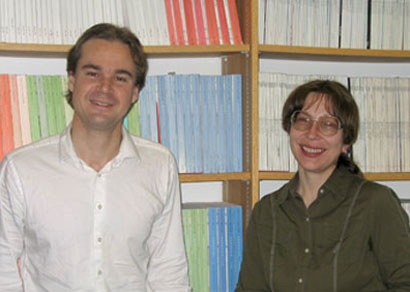

News Archives : 2008 : A Common Aquatic Animal's Genome can Capture Foreign DNA
by Steve Bradt
May 29, 2008
|  Eugene A. Gladyshev and Irina R. Arkhipova |
|
Long viewed as straitlaced spinsters, sexless freshwater invertebrate animals known as bdelloid rotifers may actually be far more promiscuous than anyone had imagined: Scientists at Harvard University have found that the genomes of these common creatures are chock-full of DNA from plants, fungi, bacteria, and animals.
The finding, described this week in the journal Science, could take the sex out of sexual reproduction, showing that bdelloid rotifers, all of which are female, can exchange genetic material via other means.
"Our result shows that genes can enter the genomes of bdelloid rotifers in a manner fundamentally different from that which, in other animals, results from the mating of males and females," says Matthew S. Meselson, Thomas Dudley Cabot Professor of the Natural Sciences in Harvard's Faculty of Arts and Sciences.
In essence, Meselson and colleagues say, bdelloids may acquire DNA by habitually disintegrating their genomes -- something these unusual animals do regularly during periods of desiccation, which fractures their genetic material and ruptures cellular membranes. Miraculously, bdelloids can then spring back to life upon rehydration of their habitats, readily reconstituting their genomes and their membranes.
In the process of rebuilding their shattered DNA, though, they may adopt shreds of genetic material from other bdelloids in the same puddle, as well as from unrelated species.
Meselson and co-authors Eugene A. Gladyshev and Irina R. Arkhipova believe the findings may solve the longstanding mystery of bdelloids' sexless ways, and may shed light on their ability to adapt to new environments.
"These fascinating animals not only have relaxed the barriers to incorporation of foreign genetic material, but, more surprisingly, they even managed to keep some of these alien genes functional," says Arkhipova, a staff scientist in Harvard's Department of Molecular and Cellular Biology.
"In principle, this gives them an opportunity to take advantage of the entire environmental metagenome," adds Gladyshev, a graduate student in molecular and cellular biology at Harvard.
While the scientists have yet to pinpoint the exact sources of the invasive DNA, they have ascertained that the foreign genes are concentrated in bdelloid telomeres, the regions at the ends of DNA thought to prevent its strands from unraveling -- much like the plastic cap on the end of a shoelace.
A next step, Meselson says, is to determine whether bdelloid genomes also contain homologous genes imported from other bdelloids. He and his colleagues also hope to examine whether the animals actually use any of the hundreds of snippets of foreign DNA they appear to vacuum up.
Nearly all other multicellular animals have strong safeguards against foreign DNA, but bdelloids' seeming embrace of genetic detritus is in keeping with their general quirkiness: Shunning sex and entirely lacking males, the ubiquitous creatures are also extraordinarily resistant to radiation, as Meselson and Gladyshev demonstrated earlier this year in a paper published in the Proceedings of the National Academy of Sciences.
With nearly 500 recognized species worldwide, bdelloid rotifers were discovered in 1702, when the renowned Dutch scientist and microscopy pioneer Antony van Leeuwenhoek added water to dust retrieved from a rain gutter on his house and observed the organisms in the resulting fluid. He subsequently described the creatures in a letter to Britain's Royal Society, which still counts an envelope of van Leeuwenhoek's rain-gutter dust among its holdings.
In addition to Harvard, Meselson and Arkhipova are also affiliated with the Marine Biological Laboratories in Woods Hole, Mass. Their work with Gladyshev is funded by the National Institutes of Health and the National Science Foundation.
Adapted from FAS Communications: The Harvard University Gazette